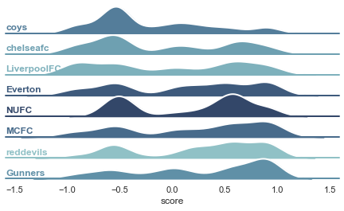

Sentiment Analysis Project
Sentiment Analysis Project
A tool to analyze the sentiment of Reddit comments using GPT-4.

Setup
You need to create a virtual env and install the packages listed in requirements.txt. You can then run Jupyter Notebooks in VS Code.
Follow these steps: How to Work with Python Virtual Environments, Jupyter Notebooks and VS Code.
You need to create a .env file with your OPENAI_API_KEY, REDDIT_CLIENT_ID, and REDDIT_CLIENT_SECRET.
For Reddit API credentials, you need to create a personal use script.
Usage
Open Reddit Sentiment Analysis.ipynb.
Features
- collecting comments from Reddit.
- analyzing sentiment in the comments.
- plotting the results.
Based on Mastering OpenAI Python APIs: Unleash the Power of GPT4 by Colt Steele (2023).